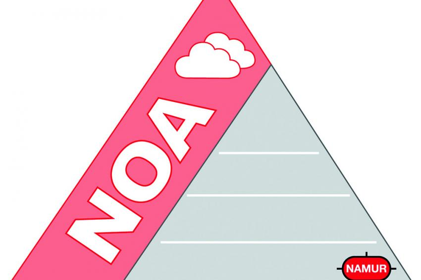

3. NAMUR Open Architecture
So you are supposed to create software that interacts with the NOA… but you are not completely clear on what NOA is?
This section provides a brief overview.
3.1. What is NOA?
NAMUR Open Architecture (NOA) was originally created by the NAMUR (a german association of process industry owners, manufacturers and academia) with a focus on making data inside brownfield (existing) plants available in edge and cloud applications. Considerable process information is held captive in field devices and has never been made available in the control and management levels of the plant - because they where not needed there when these older plants where designed and bandwidth was a precious commodity.
This is where NOA comes in, providing the technological means to make selected data available to the control layer in a secure and standardized way, without any adverse effects or invasive changes in the plant. In this way, new technologies provide added value of the plant is to be significantly increased. [NE175]
Figure: NOA Logo as per NE175, depicting the existing “automation pyramid” (CPC) in grey and NOA’s “second channel” (M+O) in purple. [NE175]_
Meanwhile, NOA also addresses greenfield installations, which often include smart field devices designed to interact with NOA and cyber-physical systems (“I4.0 outputs”). Modular plants can also rely on NOA when data is exchanged with the cloud or optimizations are to be introduced into the plant.
Added value for the plant operator is created by the processing, preparation and interpretation of the plant data by monitoring and optimization applications (M+O applications). Based on existing process information and the competences of application partners (e.g. equipment manufacturers), optimization proposals for existing plants are derived.
The operator’s know-how remains protected to the maximum - because M+O applications only have access to data they need and cannot access plant data or individual devices.
Take a look at our website on NOA for in depth info, a video on NOA and contact information in case you want to know more details on the subject.
3.2. What does this have to do with CENA!?
One fundamental concept of NOA is to “tap into” existing field devices and extract information that is then made available via OPC UA using the Process Automation Device Integration Model (PADIM) - an information model curated by the FieldCom Group. [NE176]
This is done using a “NOA Security gateway” - an secure embedded device that can communicate with assets in the process using their native industrial protocol (HART, CAN, LIN, ProfBus, Modbus RT, …) and serve data via OPC UA to interested parties. [NE177]
CENA provides the PADIM model core with classes you can use to describe your device, signals and properties in a way that can be automatically reflected via OPC UA. All you need to do is instantiate the model and provide a way to read copy from your device into the model - let CENA handle the reflection.
This mechanism is one-way: NOA Security Gatways (colloquially called ‘data diodes’ or ‘noa diodes’) never modify a field device. There are actually strict guidelines on how these gateways need to be designed - we suggest you read the associated references.
3.3. Is there more to NOA?
Certainly! Getting data out of the plant was just the first step.
NOA is a vast subject and includes data processing, creating new information models and re-integrating data back into the plant.
Take a look at our website for in depth info, a video on MTP and contact information in case you want to know more details on the subject. We also contributed to a nice book [TAU2021] that contains NOA in troves.
3.4. Normative References
NE175, “NAMUR Open Architecture: NOA Konzept”, NAMUR-Interessensgemeinschaft Automatisierungstechnik der Prozessindustrie e.V., 07/2020
NE176, “NAMUR Open Architecture: NOA Informationsmodell”, NAMUR-Interessensgemeinschaft Automatisierungstechnik der Prozessindustrie e.V., 05/2021
NE177, “NAMUR Open Architecture: NOA Security Zonen und NOA Security Gateway”, NAMUR-Interessensgemeinschaft Automatisierungstechnik der Prozessindustrie e.V., 04/2021
Thomas Tauchnitz; “NAMUR Open Architecture (NOA) Das Konzept zur Oeffung der Prozessindustrie”, ATP Praxiswissen, Vulkan Verlag, ISBN 978-3-8356-7451-6, 2021